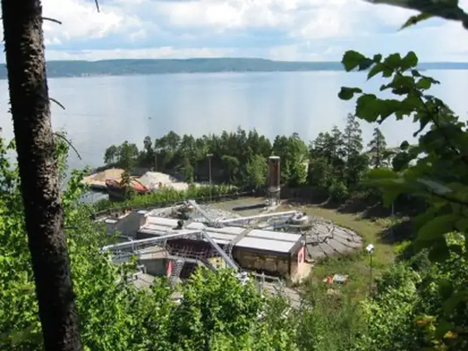
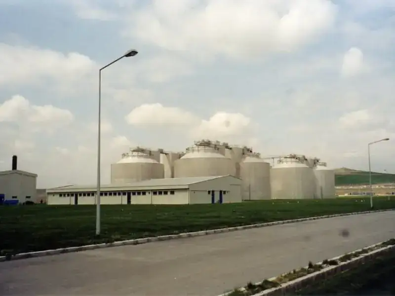
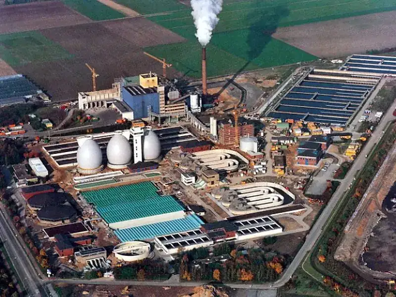
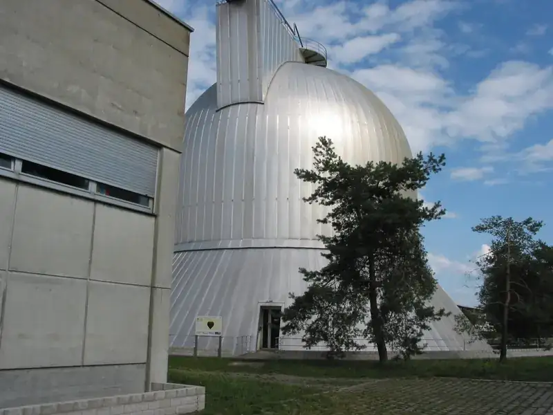
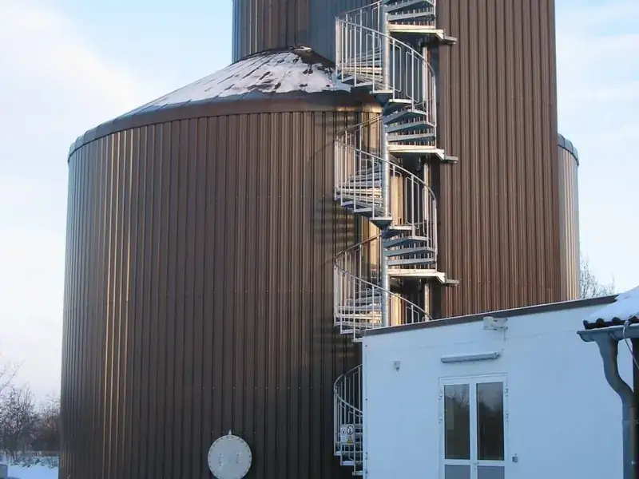
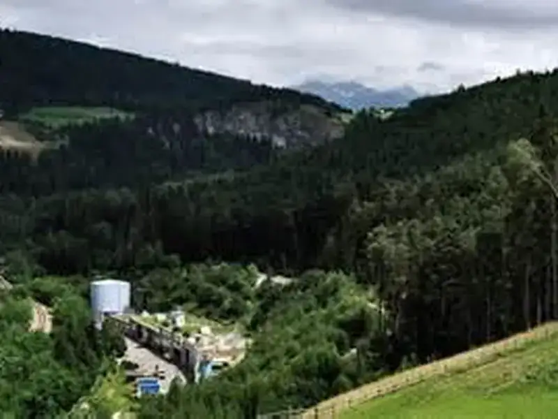
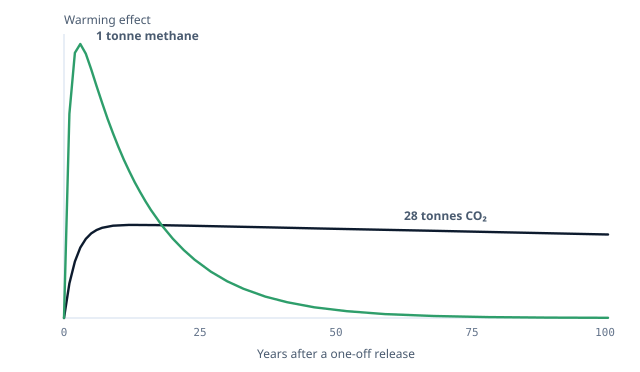
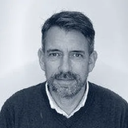

Willy Johansen
Executive Chair & Founder
Forty years in China and Europe in energy and process engineering. Held the technical, commercial and design work on Beijing Water Supply No. 10. Sits on China's national biogas standardisation committee.

A Norwegian company with thirty years of continuous presence in China, developing a first programme of ten industrial plants in Shandong Province — with feedstock already secured for many times that.
China produces more agricultural waste than any country on earth, and has made treating it a legal obligation. The infrastructure to do it does not exist.
Around 3.8 billion tonnes of crop residue, manure and food waste are generated in China each year. Left in open storage it breaks down and releases methane — a greenhouse gas roughly 84 times as potent as carbon dioxide over the twenty years after it escapes. The carbon footprint of Chinese agriculture is comparable to every car, aircraft and ship in the country combined.
Open-field disposal is now unlawful at scale. Industrial-scale treatment is required under the national five-year plan, and county officials are held personally accountable for delivering it. What does not exist, at anything close to the scale required, is the infrastructure to do the treating. That is the gap AMI is built to fill.
Source: AMI Biogas
Source: IPCC, 20-year global warming potential
Source: China 15th Five-Year Plan
| Plan priority | What an AMI plant does |
|---|---|
| Biomethane industrialisation | Agricultural waste to anaerobic digestion to biomethane, injected into the gas network |
| Agricultural and rural organic waste utilisation | 24 million tonnes of manure and crop residue treated under county frame agreements |
| Circular agriculture | Digestate returned as bio-fertiliser, putting nutrients back into depleted soil |
| Rural environmental improvement | Waste removed from open storage and open burning; rural air quality improved |
| Carbon reduction | Methane abatement at source, and fossil natural gas displaced |
On 10 September 2024 the Norwegian Ministry of Climate and Environment and China's National Development and Reform Commission signed a Memorandum of Understanding on green and low-carbon development. It runs for five years and renews automatically, and covers climate change under the Paris Agreement, green development, the circular economy, and environmental protection including waste. It creates no funding commitment; its value to AMI is framework and standing at the county and provincial level, where decisions on land, permits and feedstock are actually made.
The first plant is a reference project for national policy as much as a commercial asset — which is a material part of why permitting, land and feedstock have moved as quickly as they have.
AMI develops, builds, owns and operates the plants. Each one is funded at project level, so the portfolio can grow without the platform’s balance sheet growing with it.

Ten plants, ten separate investors. Adding the eleventh does not touch the platform’s balance sheet — the development and operating fees grow with every plant built, and each plant returns to the platform once its investor has been repaid. That is what lets the programme repeat across Shandong, then India and Europe, without a fresh equity round at platform level each time.
The technology explains what a plant does. It does not explain why a Norwegian company of our size holds this position in Shandong. That is explained by how we work, and we consider it the single largest reason AMI has got here.
We bring an egalitarian Nordic industrial tradition: flat hierarchy, decisions taken by consensus, responsibility carried personally, trust extended early, and relationships measured in decades rather than transactions. In China this is recognised as brotherhood. Our partners are partners rather than counterparties, and we work on their terms rather than importing ours. Chinese organisations do not do business at this scale with those they do not trust and are not at that level with. AMI is there. Very few Western companies are.
Land, permits, feedstock, offtake and construction were secured through established relationships rather than negotiated cold. More importantly, counterparties behave as partners when conditions change — which is the point at which infrastructure projects ordinarily fail.
Fewer things go wrong, and what does go wrong gets fixed.
The same standing that delivered the first plant is what carries the rest. Access at county, provincial and national level is a platform, not a one-off. It is the reason a portfolio is realistic rather than aspirational.
Scale becomes a question of execution, not of renewed access.
The capacity to align many parties behind one plan, decide quickly, adapt when circumstances shift, and make sure what is agreed is actually carried out. Research on major projects is consistent: outcomes are determined by implementation capability, not by plan quality.
Agreements become operating plants.
None of this was bought. It was earned over thirty years of continuous presence, and it is not quickly replicated by a sponsor arriving with capital and a technology package.
Ten plants in the first programme, all in Shandong. Feedstock secured for many times that.
Stages, left to right: cooperation agreement · feedstock secured · site & permits · offtake · construction · operating.
AS Miljøindustri is founded in Norway and becomes one of the country's leading environmental engineers, supplying biogas plants to Oslo, Stavanger and Trondheim.
AMI establishes in China. Founder Willy Johansen goes on to hold project management on Beijing Water Supply No. 10 — a $200 million project delivered with Mitsubishi and Anglian Water.
The first Norwegian hanging-lances installation, at VEAS outside Oslo, comes on line. It is still running.
AMI's principals deliver water, sludge and waste-to-energy projects across China, Turkey and Morocco.
Three biogas plants contracted in Xingren, Guizhou Province.
AMI Biogas is established as a dedicated industrial biogas company.
Five plants signed with the Yuncheng county government in Shandong Province.
Norway and China sign a Memorandum of Understanding on green and low-carbon development.
German engineering, deployed by a Norwegian company. It is the reason the plant economics work the way they do.
The hanging lances mixing system was developed in Germany by Roediger, a long-established name in municipal wastewater treatment. Our Chief Technology Officer, Michael Holzmann, is the fourth generation of that family and was Managing Director of both Roediger and Protechnic Engineering; he has built more than 250 biogas plants. AS Miljøindustri became Roediger's representative in the Nordic countries, and AMI has deployed and scaled the system since. The first installation, at VEAS outside Oslo, has run since 1997.
The process itself is long proven and widely deployed. What is not commonplace is the engineering judgement to specify, build and run it well — which sits with the Hanau team, and with Michael Holzmann personally.
Wide and shallow — typically 35 m across, 8 m high. Agitators inside the tank keep the substrate moving; they wear, and servicing them means stopping the digester. Sediment builds up, so the volume producing gas shrinks year by year. Mixing energy limits solids loading, so feedstock must be diluted.
Tall and narrow — 35 m high, 25 m across. Lances suspended from the roof inject the plant's own biogas back in; like blowing through a straw in a glass, the rising bubbles mix the whole volume. No moving parts inside the tank. Mixing is distributed rather than applied at a point — roughly twice the solids loading.

The process comes from municipal wastewater treatment, where sewage arrives whether or not the plant is running and the digester cannot be taken out of service. Reliability was the design constraint, not an optimisation. A stopped digester loses its bacterial culture, and re-establishing it costs from a couple of months to a year of lost production. One German installation ran ten years before being opened for inspection, was found in order, closed again, and has now run a further thirty — forty years in total.
| Parameter | AMI | Conventional | Basis on which we state it |
|---|---|---|---|
| Gas yield | up to 50% higher | baseline | Comparative operating data across the installed base |
| Digestion cycle | under 20 days | 30–40 days | Design retention time, confirmed in operating plants |
| Dry-solids tolerance | up to 15% | 6–8% typical | Operating range across reference installations |
| Operating hours | 8,400+ / yr (96%) | 7,000–7,500 | No submerged moving parts to service |
| Internal moving parts | none | agitators, impellers | Design characteristic of the mixing system |
Feedstock at 9–15% dry solids Pre-treatment Digestion, under 20 days Upgrading Dewatering
Livestock manure, rice straw, corn straw and mixed crop residues — agricultural waste that is currently a disposal problem, burned in the field or held in open lagoons. None of it is forest biomass, and none competes with food production.
Biomethane, upgraded to natural-gas quality and injected into the network, displacing fossil gas directly. Bio-fertiliser, returned to agricultural land in place of mineral inputs.
Every figure is stated as a maximum or a range. We do not present best-case results as typical, and the underlying data is available for review. Michael Holzmann, our Chief Technology Officer, is available to take technical questions directly.
Where the hanging lances system is already running.






More than 150 biogas plants and over 2,000 digesters across 25 countries, built by AMI's principals over four decades, to German engineering standards. Site visits to operating installations can be arranged.
The second revenue line. It comes from the same physical process as the first.
Untreated agricultural waste decomposes in open storage and releases methane — roughly 84 times more potent than carbon dioxide over the first twenty years, about 28 times over a hundred. Capturing and converting it is the plant's core function, not a co-benefit, so climate effect and revenue move together rather than trading against each other.
The additionality is structural. The waste in these counties would break down in the open if the plant were not there. Treatment happens only because AMI builds and runs it.

Per-plant CO2-equivalent abatement quantification is in preparation and will be provided with the methodology stated. It is not published here.
Executive Chair & Founder
Forty years in China and Europe in energy and process engineering. Held the technical, commercial and design work on Beijing Water Supply No. 10. Sits on China's national biogas standardisation committee.
CEO & Co-Founder
Leads AMI's county-government relationships in Yuncheng and Juye. Former Director of Special Projects at Sinopec Gateway; director of the Sino-German-Nordic Technology Centre.
Chief Technology Officer
Fourth generation of the Roediger family and former Managing Director of both Roediger and Protechnic Engineering. Has built more than 250 biogas plants. Runs engineering from Hanau.

Chief Operating Officer
Responsible for operations and procurement. Former Group Communications Director at Jotun, Managing Director of Jotun Iberica, Country Manager for Nestlé/CPW Norway; Orkla.
Country Manager, China
Runs AMI's in-country commercial work. An engineer with senior roles across trade and investment in China and responsibility for more than $2 billion of infrastructure projects.
Chief Strategy Officer
Thirty-five years in energy and M&A. Background at Siemens and KPMG; founder of the advisory firm Nordic Change. MSc engineering, NTNU; Fulbright MBA.
Chief BD Officer
Former Commercial Counsellor at the Royal Norwegian Embassy in India and Country Director, India, at Innovation Norway. Background at IBM and KPMG.
Technology Expert
German-trained process engineer carrying the Roediger engineering practice into AMI plants.
Project Manager
German-trained engineer, former Chief Researcher for large-scale solid-waste systems. Has worked on more than $2 billion of projects.
Process Engineering Expert
Industrial biogas process design, from the Centre of Excellence in Hanau.
Powered by industry practice from Alfa Laval, Mitsubishi, Bilfinger, Siemens, Orkla, Nestlé, Jotun and IBM.
We are glad to hear from investors, lenders, partners and suppliers.
The fastest way to a first meeting is a short email — who you are, and what you would like to cover. It reaches the CEO directly.
Michael Holzmann, our Chief Technology Officer, is available to take technical questions directly. Site visits to operating installations can be arranged.
AMI Biogas International AS — registered in Norway. Operations in Shandong Province, China. Engineering in Hanau, Germany.
Opens your email client with the subject line already filled in.